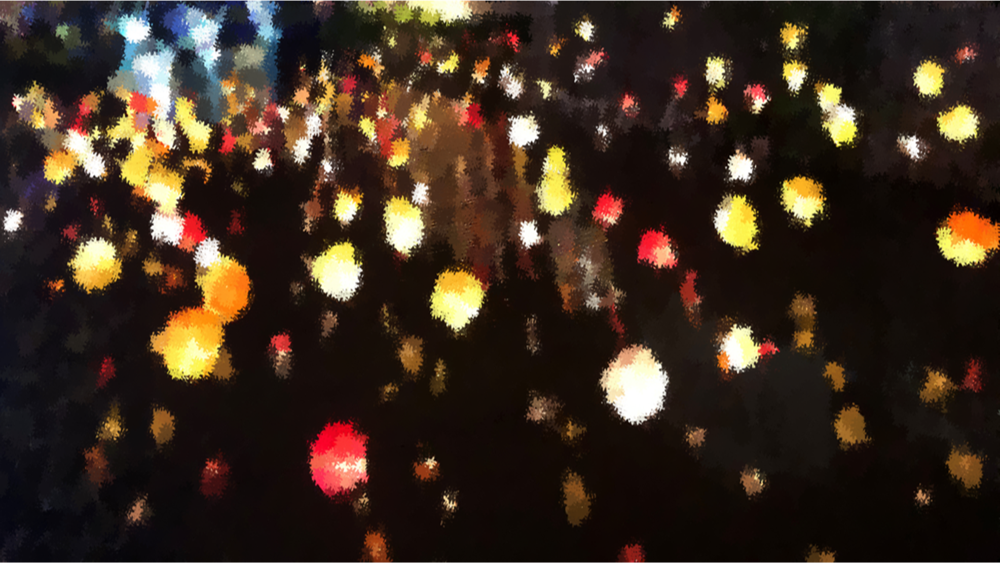
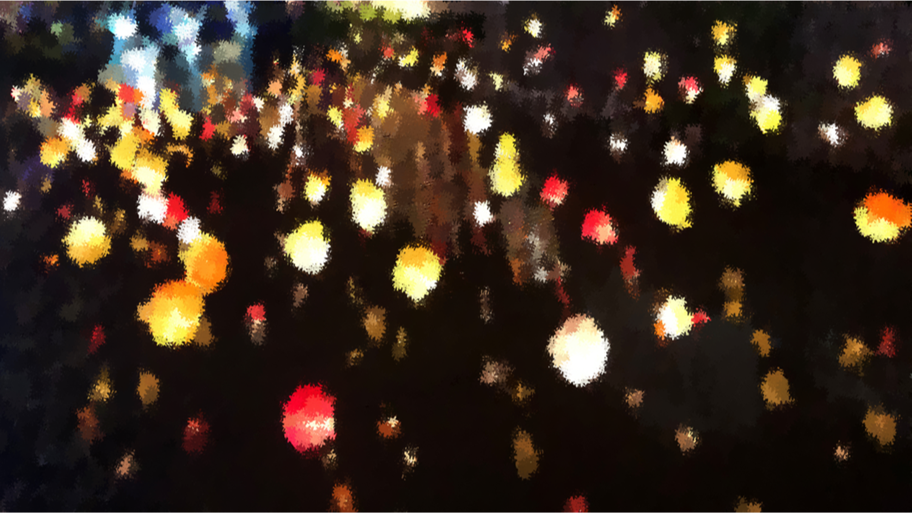

既然生命禮儀服務的專業在於照顧家屬需求與感受，那麼「了解家屬」就是一個重要環節。從業人員除了具備傳統的殯葬知識與技術、透過觀察和詢問來掌握家屬需求，仍需不斷進修以期服務能契合當事人和家屬的想法。隨社會變遷和文化價值觀的質變，人們的生死觀念轉變，面對喪葬事務的邏輯也有所不同。這種轉變，也並非是傳統與現代的兩極對立，而是鑲嵌於當代社會脈絡的一種文化形式。喪禮一生只有一次，無論是何種形式的喪禮，目的都是希望讓往生者得以安息，讓生者得到安慰。
情感與回憶的鑰匙，獨一無二的喪禮
一生僅此一次，需得不留遺憾。何爸告別式當天，霆濬一家穿戴孝服排排坐在靈堂中，隨著司儀的指示進行儀式，看著親友依序上前致意。其中，霆濬家視為家人從小一起長大、何爸視如己出的乾兒子，顧不得儀式，一上前就淚流滿面跪下，急切地連磕了幾個響頭，這一幕讓在場所有人情緒潰堤。守候在旁的王姐則迅速地替家屬遞上紙巾。
在告別式前一天，王姐與霆濬一家針對告別式、火化與晉塔當天的流程再次確認。她特別詢問霆濬媽媽，是否要跟著隊伍送老伴最後一程？根據傳統喪儀「夫妻不相送」的習俗，有終生不再嫁娶、情感堅定不移的美意。但也有部分的人認為，不送伴侶最後一程不免遺憾，因此現今有許多從業人員會建議家屬以不違反禮俗又通融人性的方式，像是不坐靈車而另外開車不靠近，或跟隨靈車行車路線但繞道。了解霆濬媽媽的想法後，王姐決定打破習俗，讓霆濬媽媽一起搭上靈車，與列隊步行隨後的晚輩們一起到火化場，圓滿兩人結褵50載的情誼。
傳統禮俗有其美意，但不一定切合家屬的想法及需求，而小至村里、大至縣市，各地禮俗也有差異性。因此對於生命禮儀服務業者來說，除了第一時間的接體安置、火化以及晉塔安葬等大方向流程不變，在接觸家屬開始規劃喪事時，就會依照每個家庭需求有所不同，因此也沒有完整的標準化流程可以遵循。
越來越多喪家會選擇更簡化和客製化的喪葬流程，不再受習俗、鄰居或親戚的說法左右。天佑國際生命事業副理俞凱皓，入行約10年，大學時期就開始接觸生命禮儀服務工作，退伍後決定延續家族事業。本是體育系專業的他，曾經非常抗拒生命禮儀服務的低氣壓工作氛圍，但從工作過程中收穫成就感和心靈成長的他，如今不僅取得禮儀師證書，也打從心底對這份工作感到驕傲，並視其為一生志業。凱皓觀察，現今家屬們注重喪禮的現場氛圍與感情釋放，更在乎會場布置是否能讓參與者產生情感和回憶的連結。
凱皓分享自己服務過印象深刻的喪禮。
 

藉由賞畫的過程追思爺爺、透過品酒的過程告別女孩，彷彿跟他們進行最後的對話。
喪禮的變化，與時俱進的專業
隨著人們生死觀念改變、家庭結構變化，以及消費模式轉變，喪禮形式逐漸轉化，生命禮儀服務從業人員的專業素養也與時俱進。信仰會造就不同的生死觀念，就台灣主要民間信仰來說，儒家重孝道的理念鑲嵌於生死觀與喪禮儀典，並揉合佛教與道教思想。有靈魂不滅、今生來世、陽間陰間、天堂地獄以及神鬼之說，並衍生隆喪厚葬或是敬天祭祖尋求保佑的儀式。
根據內政部2008年《我國殯葬禮儀服務業動態研究》報告，喪禮儀式奠基於儒家慎終追遠的觀念，使家屬能追思盡孝、抒發哀傷情緒、重整親屬關係、傳達道德意識與延續社會脈絡，具有積極的人文精神與關懷意義，因此將生命禮儀服務，定位為一種兼具服務業與文化業功能的產業。於現今文化背景之下，比起遵從制式習俗，人們逐漸轉而關注死亡儀式的功能性。即社會學家Durkheim提出的「穰解儀式」概念，將死亡儀式視為協助人們從生命中的一個階段進入另一個階段的過程。透過儀式去轉化人因死亡產生的複雜情感與失序狀態，藉由這種異於日常生活模式的喪禮事務，幫助人們回歸日常生活。
而生命禮儀服務從業人員，也是協助家屬過渡生命階段的重要角色。為了以更專業的方法落實對家屬的悲傷輔導及後續關懷，凱皓也去學習心理諮商的知識與技巧，受限於沒有相關科系學歷不能考心理諮商師證照，所以他將自己形塑為諮商需求者的身分，固定每個月一到兩次找心理諮商師報到，親自體驗諮商的過程，從中學習怎麼引導家屬說話。凱皓說心理諮商的相關技術也是目前許多禮儀師的進修方向。他希望看到家屬們藉由哭泣釋放情緒，若面無表情反而令人擔心。「因為習俗跟流程做久了一定學得會，但是這種內心層面的東西，不見得是我們做得來的，」「對我來說，能夠做到讓家屬釋放悲傷的點，協助他走出來，這個才是真的專業的禮儀師。」
除了認知喪禮是一種生命階段的過渡期，環保意識也是改變生死觀念、進而影響喪禮形式的原因之一。根據內政部公告，台灣環保自然葬數量在2018年首次超過10,000件，是10年前（2009年）的6.6倍。近年環保自然葬案件數快速增加，顯示民眾越來越能接受樹葬、花葬及海葬的觀念，不僅儀式上更為簡化，後續的祭祀禮俗也略去許多。在第一線服務過許多環保自然葬的凱皓分享，近年在殯儀館也能看到越來越多業者手上都抱著紙盒（環保自然葬先將磨細後的骨灰盛裝於可分解無毒的紙袋及紙盒中，再攜帶至葬區）。他分析，人們會選擇使用環保自然葬法，主因除了環保，也節省了動輒幾十萬的靈骨塔和骨灰罐的費用。
喪葬費用減少，可能是因為省略了傳統禮俗、採用環保自然葬，或是因現代家庭結構轉為小家庭居多，個人能負擔的喪葬費用有限。
而小家庭人數少，加上有些家屬可能在外地工作、不便請長假守於靈堂或是配合儀式時程，所以喪禮中，折衷以其他子女代替傳統本應由長男長孫進行的儀式，或衍生出專門代替家屬拜飯守靈的服務。南華大學生死學系助理教授暨殯葬組召集人楊士賢說，「殯葬的服務，就是幫家屬解決問題。遇到家裡面人少，可能只有一個子女的，（業者）要幫忙撐雨傘、幫忙捧斗；那沒有子女的獨居老人怎麼辦，他的喪禮你要隨拜，或者你要幫他捧飯，他彷彿就是你的親人一樣。」
根據國寶服務集團禮儀事業群經理黎振雄觀察，近年生命禮儀服務市場的案件總量增加，但平均每個案件的費用減少。對此，有台灣殯葬業教父之稱的南華大學講座教授徐福全分析，案件量增加直接反映了死亡人口數上升的事實，但費用減少不只單一原因；其中之一是政策提倡簡約節葬的觀念，具體方式像是環保自然葬和聯合奠祭。其二是，現今喪葬費用較為透明化，不同於過去生命禮儀服務業者說了算的狀況，家屬也開始會比價。
消費者意識提升讓人們購買物品或簽訂契約時都會貨比三家，在資訊越來越透明的生命禮儀服務市場同樣如此。撇除慌亂無章的狀況，如今家屬在選擇生命禮儀服務時也會事先調查和比較。這一位家屬的謹慎，至今仍讓凱皓印象深刻；透過親友介紹聯繫到凱皓的家屬，於晚間近10點，母親在醫院離世時撥電話給他，一般來說凱皓會馬上著裝出發，但是家屬卻告知他先不用過去，也沒多交代其他事項就結束了通話。這讓凱皓一頭霧水，整晚都在考慮到底要不要出門？要不要再回撥電話？是否因為家人之間意見相左還未溝通好？直至隔天下午1點之前都沒有消息，依凱皓的經驗，這種情況應該是家屬決定交給其他業者服務了。但卻又接到這位家屬來電，希望預約時間到凱皓的公司了解人員組成以及接體流程等。
凱皓認為這是好現象，代表生命禮儀服務市場中的消費者，開始會思考自己想要什麼樣的服務。同時，雙向地牽動業者的想法，使得業者有積極進修專業、提升服務品質的動力，進一步發展出具有公司特色的競爭力。凱皓在受訪時不僅一次提到，「這個行業沒有學完的一天。」即使流程上大致相同，每個顧及家屬需求而隨機應變的細節，正是從業人員發揮專業之處。也因此不論公司規模大小，生命禮儀服務公司的員工教育訓練，都是一邊學習基本知識技能，一邊實際參與案件以累積其具高度靈活性的專業。《禮儀師管理辦法》中，禮儀師證書年限6年，需參與一定時數專業教育訓練再換證的制度，也是秉持同樣的精神，以確保從業人員的專業與時俱進。